|
|
Kochstudio
 |
 |
 |
 |
 |
| Anfang |
vorheriges |
Index |
nächstes |
Ende |
Willkommen beim
aktuellen Kochstudio, hier erleben Sie, wie man Wasser
anbrennen lässt und auch sonst alle möglichen
Nahrungsmittel*¹! =)
|
Gerührtes
Ei trifft gelbe Kugeln 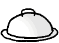
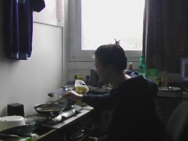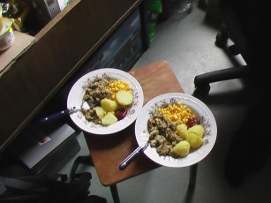
Sehen Sie
Hausfrau Saskia, wie sie die Zwiebeln "andünstet", bei diesem
hochprofessionellem Klang blieb es auch, das Ergebnis
>>Gerührtes Ei trifft gelbe
Kugeln<< war aber dennoch delikat; abgesehen vom
bitteren Nachgeschmack, dessen Ursache wir bis heute nicht
herausgefunden haben...
|
Roter
Reishalbmond
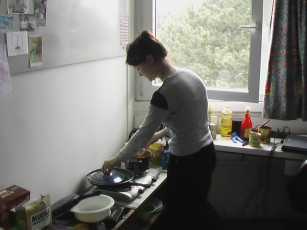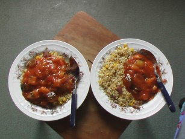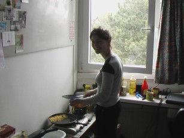
Für
den
kommenden Kochwettstreit hatte ich mir ein dreiteiliges Pfannenset
sowie einen seperaten Deckel angeschafft. Die Kompatibilität
derer war zwar nicht ausgesprochen groß, dennoch war die
Kreation >>Roter Reishalbmond<< (siehe
rechter Teller im mittleren Bild) ein voller Erfolg. Für
Klein- und andere Schlabberkinder empfiehlt sich die Anordnung von Reis
und Ratatouillesauce wie auf dem linken Teller zu sehen, dann passiert
auch beim "Nachschlagholen" kein Malheur...
|
Kleckerlieschen
Na ja ab und zu
kann es doch mal passieren...
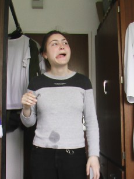
|
Ratatouillenudeln
  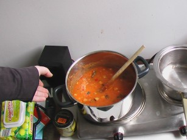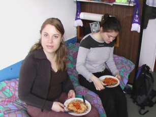 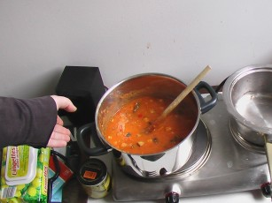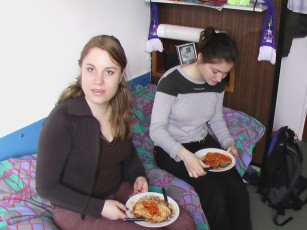
Wieder
mussten hungrige Mäuler gestopft werden, und nichts
geht über Nudeln. Hatten wir für den
>>Roten Reishalbmond<< noch die Zutaten
fertig aus der Dose genutzt, wurde dieses Mal das Gemüse
frisch geputzt, geschnitten und teilweise püriert. Meine neue
Errungenschaft für dieses Festmahl war eine Knoblauchpresse,
so wurden die Zehen nicht mehr lackiert sondern zerdrückt,
schmeckt auch besser!
|
|
|
|
|
|
| Anfang |
vorheriges |
Index |
nächstes |
Ende |
|
|